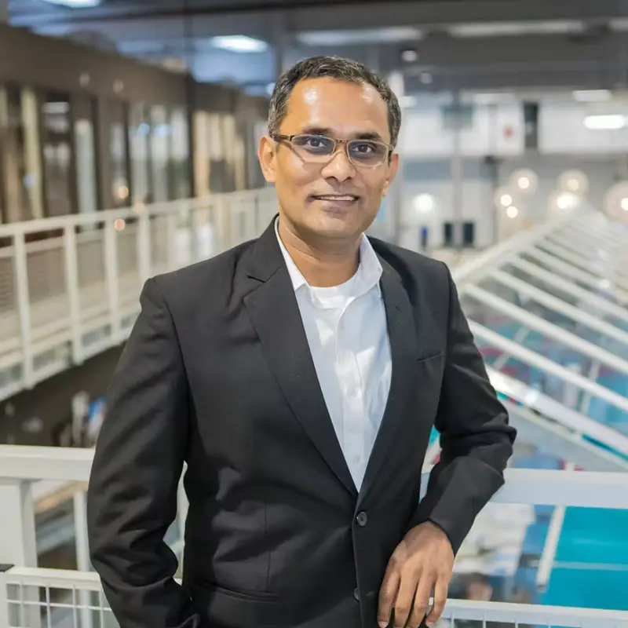
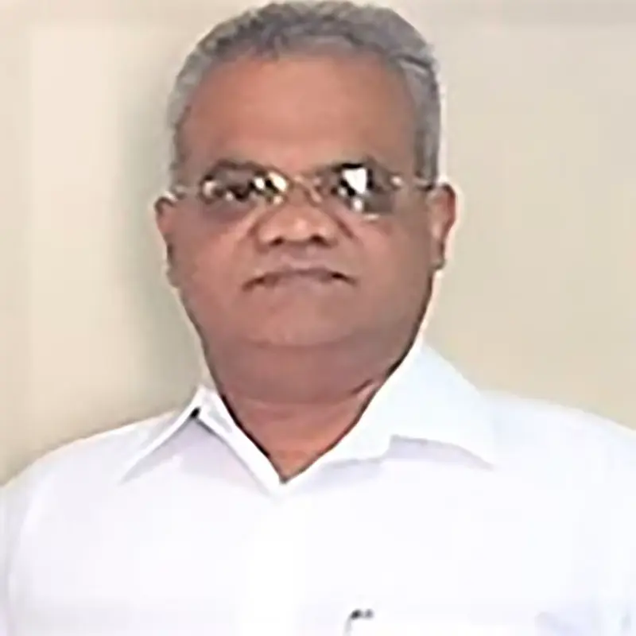
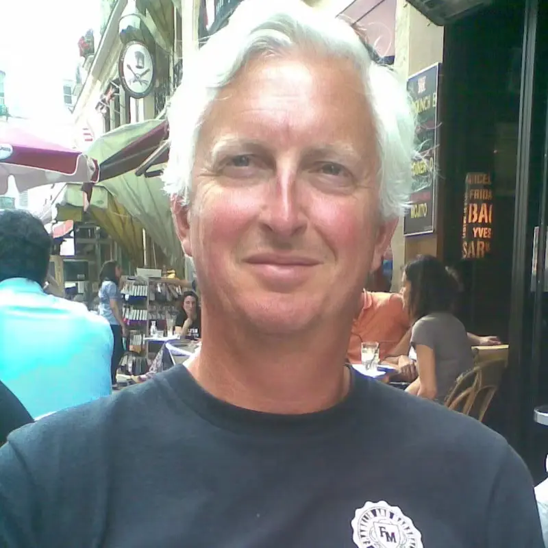

Board advisor
Daan Koornneef
Advises on towage operations, maritime leadership and commercial deployment, drawing on senior experience across international towage and marine services.
Towage operations · maritime leadership
Tow-botic Systems
Tow-botic Systems combines seagoing operational experience, marine engineering and robotics to develop deployable alternatives for selected towage and positioning tasks.

Founder-led
Capt. Gary Vaz brings three decades of maritime experience across ship command, marine consulting, port planning, vessel manoeuvring, simulation, logistics and nautical risk.
He leads Towbot product definition and development, connecting the operating problem at the vessel with the engineering, safety and commercial decisions required to build a deployable system.
The company operates through its India and Netherlands base, bringing product invention and international commercial development together under the Towbot platform.
Contact Gary directly ↗Board advisors
Tow-botic Systems is advised across towage operations, project delivery, strategic partnerships, technology, intellectual property and commercial development.
Board advisor
Advises on towage operations, maritime leadership and commercial deployment, drawing on senior experience across international towage and marine services.
Towage operations · maritime leadership

Board advisor
Advises on project delivery, finance and strategic partnerships, with experience developing and implementing energy, offshore and infrastructure projects.
Project delivery · finance · partnerships

Board advisor
Advises on technology, intellectual property and commercial legal matters, with long experience supporting entrepreneurs and innovation-led companies.
Technology · IP · commercial legal
Why Towbot exists
Towbot separates the manoeuvring function from the conventional tug hull or permanent vessel conversion, opening a different operational and commercial model.
Direct command of the thrust unit can simplify communication and response for selected manoeuvres.
Detachable units can be assigned to compatible assets and duties rather than fixed permanently to one hull.
Battery-electric operation at the point of use supports cleaner port and project operations.
Start with the operating problem
Share the vessel type, manoeuvre, location and present tug or positioning arrangement. We will scope an initial application assessment and the information needed for a credible business case.
Request an application assessment ↗